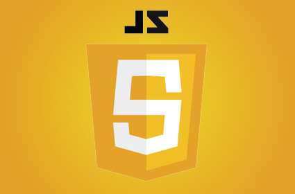
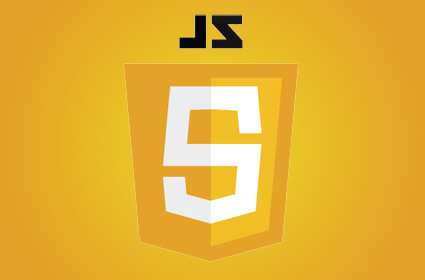

Fedorenko
Vladyslav
Full-Stack Java Developer
About me
Developer with experience in front-end and back-end development. Proficient in Java, Spring Boot, SQL, NoSQL, Docker, Kubernetes, HTML, CSS, JavaScript. Skilled in Spring Framework, Hibernate, JPA, REST API, Redis, Jenkins, AWS, Google Cloud. Experienced with JUnit, Mockito, GitHub, GitLab.
Focused on high-quality development, code optimization, and scalable solutions. Confident in monolithic and microservice architectures, utilizing Spring Reactive, Gradle, Maven, Webpack. Quick to adapt to new technologies and enjoy solving complex challenges.
Experience
Junior Front-end developer (6 month)
Middle Back-end Java (Spring Framework) developer (4 years)
Skills

 
